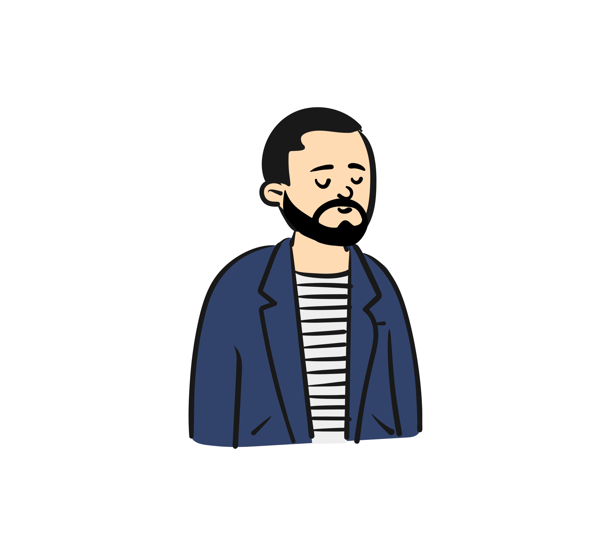

Chi siamo
La nostra Storia
La nostra azienda nasce nel 2001, da un gruppo di amici colleghi di università. Ben presto, si è capito che oltre alla comune passione informatica, c'era molto di più che ci univa: la passione per i videogiochi, i manga e i giochi da tavolo. Intuendo le potenzialità di Internet, abbiamo deciso di creare un sito web per condividere le nostre passioni con il resto del mondo. Così è nata PopTech, oggi punto di riferimento nel settore, sia in Italia che all'estero.
I tempi cambiano, ma la nostra passione rimane la stessa. Per questo, abbiamo deciso di ampliare progressivamente la nostra offerta, così come i nostri interessi, per venire incontro ad un pubblico sempre più vasto e variegato.
Ci troviamo a Padova, in via Trieste 12. Se vuoi venire a trovarci, la nostra sede è al primo piano di un palazzo di fronte alla stazione. Nel corso del tempo, abbiamo avuto diversi cambiamenti e la nostra attività è cresciuta sempre di più; nel 2015, abbiamo deciso di ampliare la nostra sede con un secondo piano, per poter accogliere sempre più clienti. Inoltre, abbiamo deciso di aprire una seconda sede a Milano, in viale Monza 12.
Per noi, il lavoro è un gioco e la passione è il nostro motore. Per questo, abbiamo scelto di lavorare in un ambiente giovane e dinamico, dove il contatto con le persone e lo scambio di consigli, opinioni e idee è alla base della nostra idea di lavoro. Le persone contano per noi, e per questo abbiamo creato un team di professionisti altamente qualificati, che si occupano di ogni aspetto della nostra attività.
Il nostro team è composto da programmatori, grafici, web designer, copywriter, esperti di marketing e comunicazione, esperti di videogiochi, esperti di manga e giochi da tavolo, esperti di storia e molto altro. Tutti insieme, siamo in grado di offrire un servizio completo e di qualità, che soddisfa le esigenze di ogni cliente.
La nostra azienda fonda le proprie radici su 4 persone, che si occupano di ogni aspetto della nostra attività. Siamo il cuore pulsante di PopTech, e siamo sempre pronti a rispondere alle vostre domande.
Il nostro staff
-

Gabriel Rovesti
Cerco di essere un ragazzo creativo, curioso e sempre pronto a inseguire l'ultima sfida. Seguo la parte responsabile e amministrativo "dietro le quinte", ma sono anche il responsabile della parte grafica e del marketing.
-

Erica Cavaliere
Sono una ragazza curiosa, che cerca sempre di divertirsi in quello che fa, e di imparare sempre qualcosa di nuovo. Mi occupo della parte commerciale, della gestione dei clienti e della vendita diretta. Seguo anche la parte dei videogiochi e dei manga.
-

Giulio Moretto
Ho sempre avuto una passione per la tecnologia e la programmazione. Mi occupo della parte tecnica del sito, della gestione dei server e della sicurezza. Seguo inoltre la parte abbigliamento e videogiochi alla vendita diretta